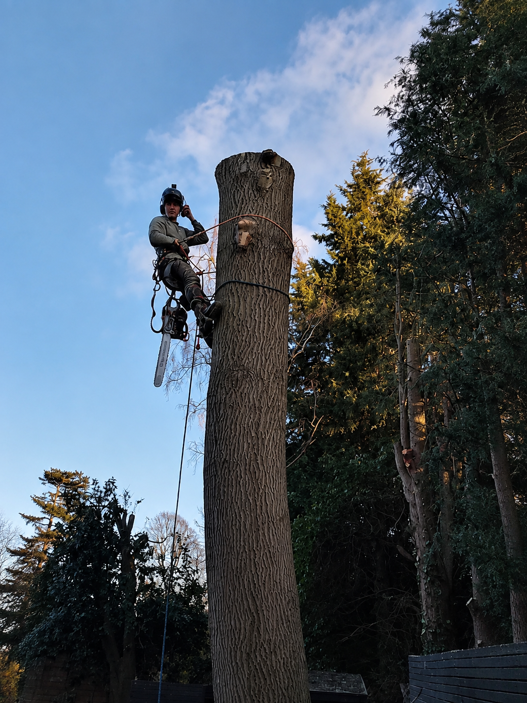
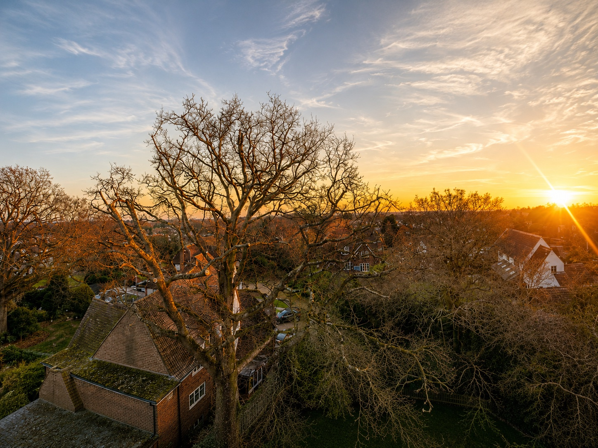
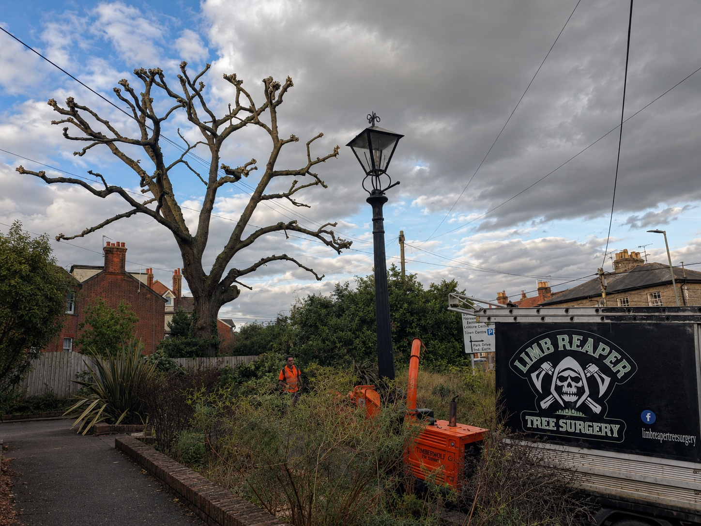
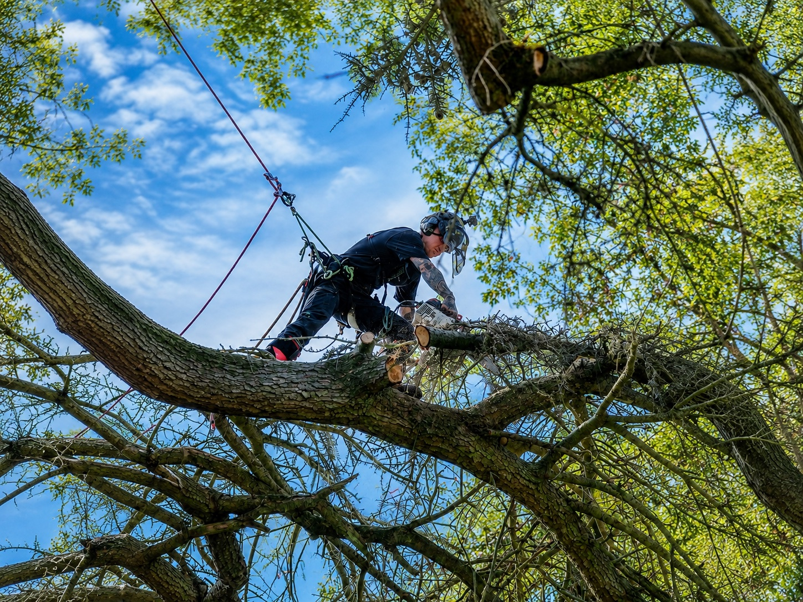
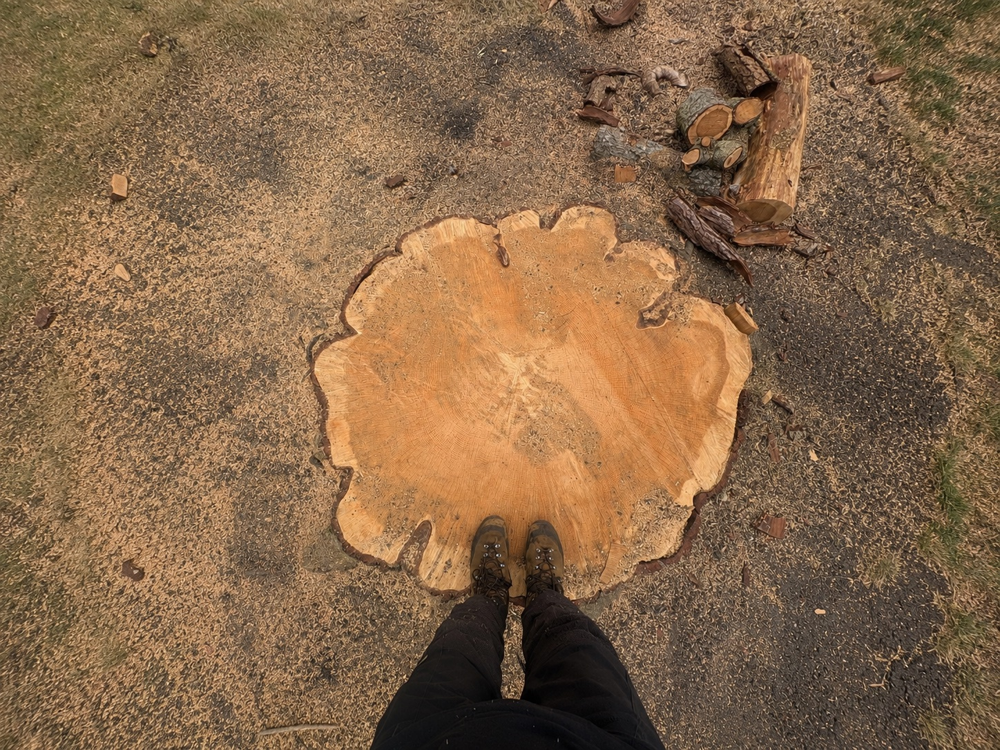
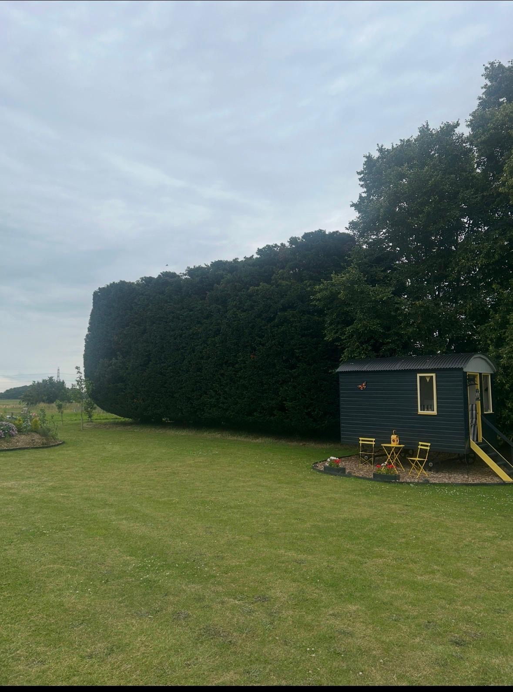

Don't fear the reaper
Quality tree surgery.
Seriously sharp results.
Limb Reaper is a fully insured, NPTC-qualified tree surgery and arborist team based in Sudbury, carrying out tree removal, crown work, pollarding and emergency call-outs across Sudbury and the surrounding Essex and Suffolk villages.
Tree surgery,
start to finish
Our Sudbury tree services cover everything from a single overhanging limb to a full site clearance — every job is assessed on-site by a qualified arborist, quoted honestly, and carried out to British Standard BS3998. Here's a flavour of what we cover:

Tree Felling & Removal
Safe, controlled removal of whole trees — including sectional dismantling in tight gardens or near buildings, roads and power lines.
Learn more
Crown Reduction & Thinning
Reducing height and density to ease wind loading, let in light, and keep a mature tree healthy and structurally sound for years to come.
Learn more
Pollarding
Regular, scheduled reduction that keeps large trees permanently sized down — ideal for gardens, roadsides and boundary lines.
Learn more
Dead-Wooding & Pruning
Removing dead, diseased or damaged limbs before they become a hazard to people, property or the tree itself.
Learn more
Stump Grinding
Grinding stumps below ground level so the area can be replanted, turfed or paved over straight away — no waiting, no eyesore.
Learn moreEmergency & Storm Response
Fast, out-of-hours response for fallen or dangerous trees after storms — making sites safe day or night.
Learn more
Crown Lifting
Removing lower limbs to raise the canopy, clearing driveways, paths, roads or roof lines without changing the tree's overall shape.
Learn more
Site Clearance
Clearing overgrown land, scrub and multiple trees ahead of building work, landscaping, or just reclaiming a neglected garden.
Learn moreHedge Cutting
Precise trimming, height reduction and restoration for formal hedges, boundary screening and overgrown garden hedging.
Learn moreBuilt on trust
A reputation built job by job, across Sudbury, Suffolk and Essex.
Limb Reaper Tree Surgery has grown through doing things properly — turning up when we say we will, working safely, respecting every property and leaving each site clean and tidy when the job is done.
The business is run by Ryan and remains genuinely hands-on. From the first site visit and quotation through to the work itself, you’re dealing directly with someone who knows the job inside out.
More often than not, Ryan is up the tree alongside the team, making sure every job is completed to the standard the business has built its reputation on.
-
Fully insured, every job
£10m public liability cover as standard — ask to see the certificate before we start, we're used to it.
-
NPTC-qualified climbers
Every person up a tree holds the right certificate for the kit they're using, no exceptions.
-
Written, no-obligation quotes
A clear price before anything's booked in — never a vague guess over the phone.
-
TPO & council experience
We check Tree Preservation Orders and conservation area rules so you don't get caught out later.
-
Full clean-up, always
Logs, brash and mess cleared before we leave — not just the bits that were easy to reach.
-
Direct, knowledgeable answers
Call or message and speak to someone who actually knows the job — not a call centre script.

Trusted by Sudbury
& the surrounding villages
We don't ask for reviews, people just tend to leave them. Here's a handful of the 60+ five-star reviews we've had on Google.
"I can't recommend Ryan and his team enough. From the very first phone call Ryan showed extreme care and attention to our needs, he offered to complete the planning permission application form on our behalf knowing what would be best to write to ensure that it was approved on the first submission. He was very knowledgable and answered all my questions. He arrived on time each day with 1-2 additional team members who were all polite and professional. Ryan ensured the garden was left spotless."
"Great work yesterday by maestro Ryan, with expert support from Ed. Massively overgrown conifers halved in height and neatly trimmed back, all cleared and left spotless. Hello morning sun! Thank you very much Ryan!"
"Ryan & Ed have dealt with a few trees at our home that had over grown. They always arrive on time, work efficiently and do a great job. Ryan is knowledgeable and approaches his work with great detail and respect for how the trees should be and the end result. Would highly recommend. Needless to say they are returning in the Spring to do another job for us."
"We can't recommend Ryan and his company enough. He spent several hours reducing and cutting back a very overgrown Boxelder Maple tree and Laurels which unfortunately turned out to be the hottest day of the year! He completed the work to a very high standard, was punctual and communication throughout the process has been brilliant. Will definitely be using again."
"I would highly recommend Limb Reaper: easy to liaise with, punctual, business like and capable, friendly, clean and tidy, and they take time to understand what you would like to achieve and explain options. The garden has never looked so good, I wish I'd found Limb Reaper years ago. His knowledge of the trees, laurels and plants in the garden was exceptional."
"We don't usually leave reviews but we were so impressed with Ryan that we felt we had to. We would not hesitate in recommending him. He arrived on time, is very polite and knowledgeable and carried out the job to a very high standard and left the whole area clean. Watching him swinging around in the tree was an added bonus!"
"Ryan and team did a great job cutting back an oak tree in my front garden. Shaped the tree beautifully and left the garden immaculate when finished. Ryan was extremely polite and knowledgeable and I will not hesitate to use him again."
"Ryan and his small team completed the work to our complete satisfaction. He started at the promised time and completed within the expected three days. Despite the windy conditions, the work included reducing a huge overhanging Horse Chestnut, reshaping a large Laurel tree, removing branches from a 30 year old Willow and thinning out a Hazel Nut tree to allow light — plus pollarding a 120 year old Oak Tree in the front garden."
"Ryan and his team completed a reduction on two trees. All work was carried out superbly, within the time frame agreed, & the cleanup of the garden afterwards was spotless. Ryan even agreed to help with another couple of extra small tidy up jobs before leaving. Great value for money, & highly recommended."
"Ryan helped remove a large tree from our back garden. He was very easy to deal with from quotation stage to doing the job. The tree was fully removed and chipped on site and all leftovers removed to the point you would not know he had been there. The roots were also drilled into and poisoned as part of the process. Highly recommend Ryan and his services."
"Ryan made an excellent job of tidying the tree that had grown too big and was blocking light as well as pushing against the fence. Reasonable price and very efficient and friendly service. And a great company name as well!! I'd definitely recommend."
"Ryan and his team did an amazing job removing our Eucalyptus tree. They were friendly and efficient, arriving on time, completing the job in good time and leaving both our garden and our neighbours' spotless afterwards. I would highly recommend them for any tree surgery requirements."
"Ryan is extremely knowledgeable and professional, keeping in touch throughout the initial visit, provision of a quotation, booking a convenient date and the actual job's execution. His expertise has transformed an increasingly dark and dingy part of the garden, whilst maintaining the privacy afforded by the trees. Recommend and will be using Ryan for any future projects."
"Ryan & Ed did a fantastic job cutting back & tidying up our ceanothus tree — other than the tree looking so much better you wouldn't have known that they had been there, they left our garden neat & tidy, all rubbish removed. They also popped round our neighbours who had asked them to look at a tree in their garden and trimmed this for them. Would highly recommend them, friendly, polite & professional."
"Very happy with the service provided by Ryan. Removed a large tree and stump leaving the area clean and tidy! Will be using again and would highly recommend!"
"Excellent job from start to finish — quote to clean up. Understood what the tree needed, a very old and much loved walnut. Very pleased with the work, the price and the people."
"Ryan and his team did a great job cutting back a cedar and removing several cypress trees in our garden. They were honest, delivering a quick service and did a fantastic job. His communication with us was excellent, and all was left tidy afterwards — will be calling again when our trees need a trim!"
"Ryan removed a large birch tree and stump from our smallish garden. I'd had a bad experience with a previous tree surgeon who had let a huge branch fall into our pond, damaging it. However, Ryan assured me he would stay well clear of the pond and greenhouse and by using a pulley system he certainly did! Ryan is careful and takes obvious pride in his work. I can't recommend him enough."
The work,
straight off the ropes
Recent tree surgery jobs from Sudbury, Great Cornard, Long Melford and the surrounding Essex and Suffolk villages — shot from the ground and from up in the canopy.
From first call
to cleared site
Four steps, every time — no surprises on the day and no mess left behind.
Get in touch
Call, message, or send us a few photos. Tell us what's going on and where you're based.
Free site visit
We come out to assess the work, access and any council permissions needed, then send a clear, written quote.
The work
Our NPTC-qualified climbers carry out the job safely, with the right equipment and site protection throughout.
Clear & tidy
Site swept, logs or chippings dealt with as agreed, and all waste disposed of responsibly.
Sudbury-based,
covering North Essex & Suffolk.
Limb Reaper is based right on Sudbury's doorstep, so if you're in the villages around it — Great Cornard, Long Melford, Bures, Acton, Chilton, Newton Green or Glemsford — we're usually only a few minutes away. We also cover the wider North Essex and Suffolk area, with a free quote within a few days, sooner if it's urgent.
- Sudbury
- Great Cornard
- Long Melford
- Bures
- Acton
- Chilton
- Newton Green
- Glemsford
- Colchester
- Braintree
- Halstead
- Clacton-on-Sea
- Saffron Walden
- Hadleigh
- Ipswich
- Bury St Edmunds
- Stowmarket
- + nearby areas
Questions, answered
before you ask
The things people usually want to know before they book a job in.
Are you based in Sudbury?
Yes — Limb Reaper is based in Sudbury, and it's where most of our tree surgery, removal and arborist work happens week to week. We also cover the surrounding villages and towns across North Essex and Suffolk, so if you're nearby, just get in touch.
Do I need permission to remove or prune a tree?
Sometimes. Trees within a conservation area, or covered by a Tree Preservation Order (TPO), usually need council permission before any work goes ahead. We check this for you as part of the free site visit and handle the paperwork if it's needed.
Are you fully insured?
Yes — we carry £10m public liability insurance, and every climber working at height is NPTC-qualified for the equipment they're using. Happy to show the certificates before we start.
How much will the work cost?
It depends on the tree, access and the work involved, so we don't quote over the phone. Every job gets a free, no-obligation site visit and a clear written quote before anything's booked in.
Can you come out in an emergency?
Yes — we offer a 24/7 response for storm damage, fallen trees, or anything that's become dangerous. Call us any time on 07500 002582.
What happens to the logs and waste?
Whatever suits you — we can leave logs stacked for firewood, chip the brash on site, or remove everything and dispose of it responsibly. We'll agree it with you before we start.
Do you clean up afterwards?
Every time. The site is swept and cleared before we leave — you shouldn't be able to tell we were there, other than the tree looking better.
Tell us about
the job
Prefer to write it down? Fill in a few details and we'll get back to you — usually within a few hours.
Send over as much or as little as you like — a couple of photos and a rough idea of what's needed is plenty to get started. We'll follow up to arrange a free site visit.
Message sent
Thanks — we'll be in touch shortly to talk through your job.